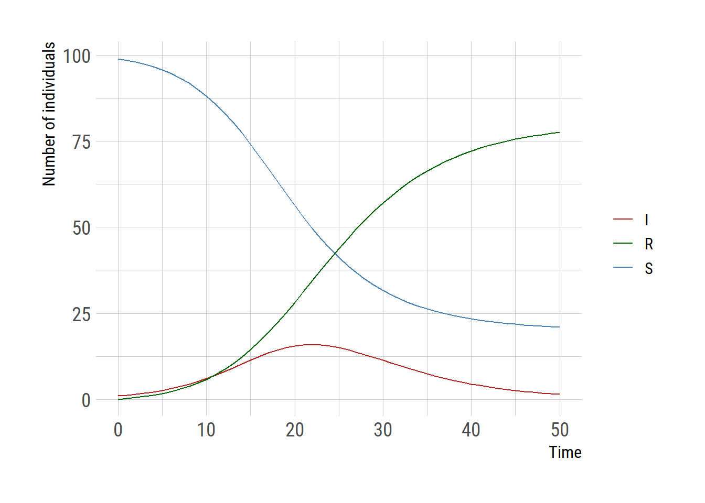
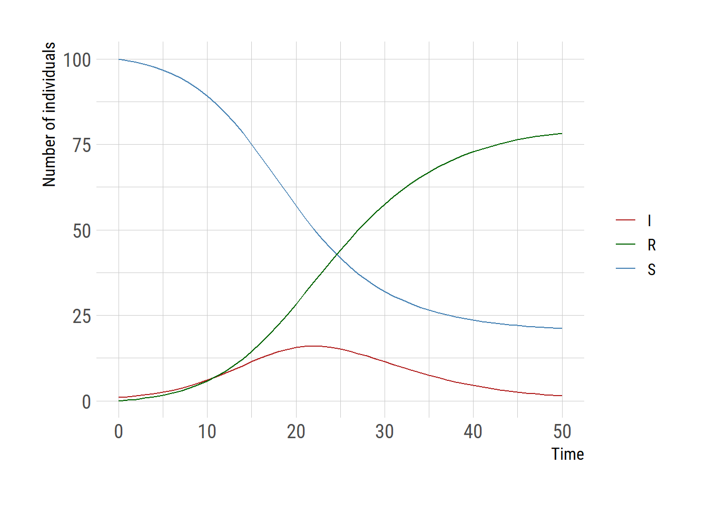
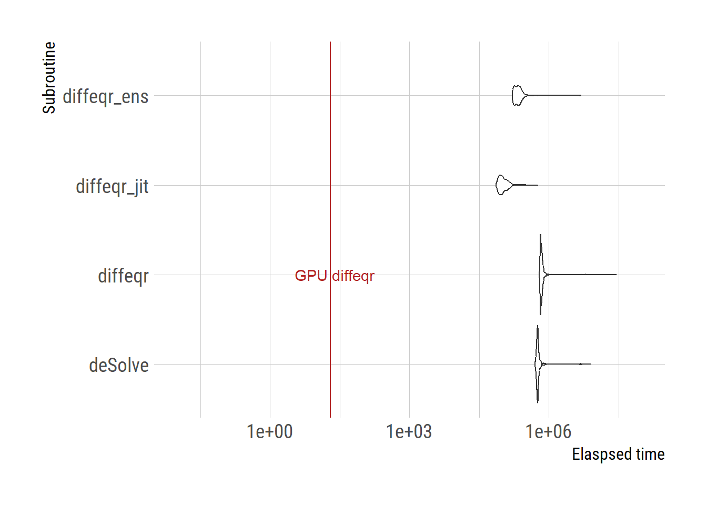

sir_deSolve <- function(t, u, p){
N <- sum(u)
du1 <- - p[1]*u[1]*u[2]/N
du2 <- + p[1]*u[1]*u[2]/N - p[2]*u[2]
du3 <- + p[2]*u[2]
return(list(c(du1, du2, du3)))
}diffeqr: R interface to the Julia’s DifferentialEquations.jl
differential equation
julia
DifferentialEquations.jl
diffeqr
Julia DifferentialEquations.jl provides an impressive collection of differential equation solvers. The DE solvers available in the package are reliable and a lot faster than what’s avaiable in R. It’s now possible to access the solvers in R thanks to the diffeqr package. The following codes were adapted from the diffeqr GitHub page.
deSolve package
I am using the SIR model as an example and for speed comparison, first solving equations using the deSolve package.
Let’s solve the model using the deSolve::ode function.
library(deSolve)
u0 <- c(99, 1, 0)
tspan <- seq(from=0, to=50, by=1)
p <- c(0.4, 0.2)
outdf <- as.data.frame(ode(y=u0, times=tspan, func=sir_deSolve, parms=p))
saveRDS(outdf, "outdf.rds")outdf <- readRDS("outdf.rds")
library(ggplot2)
extrafont::loadfonts("win", quiet=TRUE)
theme_set(hrbrthemes::theme_ipsum_rc(base_size=14, subtitle_size=16, axis_title_size=12))
ggplot(outdf,aes(x=time))+
geom_line(aes(y=`1`, color="S")) +
geom_line(aes(y=`2`, color="I")) +
geom_line(aes(y=`3`, color="R")) +
scale_color_manual("",values=c("S"="steelblue","I"="firebrick",
"R"="darkgreen"))+
labs(y="Number of individuals", x="Time", color="")
diffeqr package
Now let’s use the diffeqr package. Once the de <- diffeqr::diffeq_setup is executed, the functions for DifferentialEquations.jl are available through de$. diffeqr has slightly different conventions for the ODE model.
library(diffeqr)
de <- diffeqr::diffeq_setup()
sir <- function(u, p, t){
N = sum(u)
du1 = - p[1]*u[1]*u[2]/N
du2 = + p[1]*u[1]*u[2]/N - p[2]*u[2]
du3 = + p[2]*u[2]
return(c(du1,du2,du3))
}
u0 <- c(100, 1, 0.0)
tspan <- c(0.0, 50.0)
p <- c(0.4, 0.2)
prob <- de$ODEProblem(sir, u0, tspan, p)
sol <- de$solve(prob, de$Tsit5(), saveat=1)
mat <- sapply(sol$u,identity)
udf <- as.data.frame(t(mat))
tudf <- cbind(data.frame(t=sol$t), udf)
saveRDS(tudf, "tudf.rds")tudf <- readRDS("tudf.rds")
tudflong = tidyr::pivot_longer(tudf, cols=2:4,
names_to="var",
values_to="count")
ggplot(tudf,aes(x=t))+
geom_line(aes(y=V1, color="S")) +
geom_line(aes(y=V2, color="I")) +
geom_line(aes(y=V3, color="R")) +
scale_color_manual("",values=c("S"="steelblue","I"="firebrick",
"R"="darkgreen"))+
labs(y="Number of individuals", x="Time", color="")
The ODE model can be sped up after compiling using the just-in-time (JIT) compiler.
prob_jit <- diffeqr::jitoptimize_ode(de, prob)
# sol <- de$solve(prob_jit, de$Tsit5(), saveat=1);The ODE model can be sped up even further by running it on the GPU. The GitHub page is more geared toward the case in which runing the model multiple times over different initial conditions, which is called ensemble solve. This is why the term ensemble is used below. However, we use the same initial conditions as our sole purpose is to run the model multiple times and compare the elapsed time.
prob_func <- function (prob, i, rep){
de$remake(prob, u0=u0, p=p)
}
prob_ens <- de$EnsembleProblem(prob_jit, prob_func=prob_func, safetycopy=FALSE)
# sol <- de$solve(prob_ens, de$Tsit5(), de$EnsembleSerial(), trajectories=1, saveat=1);
# to take the full advantage we need the following.
degpu <- diffeqr::diffeqgpu_setup("CUDA")
# de$solve(prob_ens, degpu$GPUTsit5(), degpu$EnsembleGPUKernel(degpu$CUDABackend()), trajectories=niter, saveat=1);I do not describe here but further performance enhancements are possible if your problem can make use of parallel computing.
library(microbenchmark)
niter <- 1e3
benchmark = microbenchmark(
deSolve = ode(y=u0, times=seq(0,50,by=1), func=sir_deSolve, parms=c(0.4,0.3)),
diffeqr = de$solve(prob, de$Tsit5(), saveat=1),
diffeqr_jit = de$solve(prob_jit, de$Tsit5(), saveat=1),
diffeqr_ens = de$solve(prob_ens, de$Tsit5(), de$EnsembleSerial(), trajectories=1, saveat=1),
times=niter
)
benchmark
saveRDS(benchmark, "benchmark.rds")benchmark <- readRDS("benchmark.rds")
library(dplyr)
benchmark |>
group_by(expr) |>
summarize(lower_sec = quantile(time/1000, probs=0.025),
median_sec = quantile(time/1000, probs=0.5),
upper_sec = quantile(time/1000, probs=0.975))# A tibble: 4 × 4
expr lower_sec median_sec upper_sec
<fct> <dbl> <dbl> <dbl>
1 deSolve 523. 577. 799.
2 diffeqr 647. 689. 893.
3 diffeqr_jit 77.9 99.4 166.
4 diffeqr_ens 168. 214. 332.# GPU version requires a different framework to test the speed
niter <- 1000
telapsed_gpu <- system.time(de$solve(prob_ens, degpu$GPUTsit5(),
degpu$EnsembleGPUKernel(degpu$CUDABackend()),
trajectories=niter, saveat=1))
saveRDS(telapsed_gpu, "telapsed_gpu.rds")benchmark <- readRDS("benchmark.rds")
telapsed_gpu <- readRDS("telapsed_gpu.rds")
df <- data.frame(subroutine=benchmark$expr, time=benchmark$time)
ggplot(df) +
geom_violin(aes(x=subroutine, y=time))+
scale_y_log10(limits=c(0.01, 1e8))+
geom_hline(aes(yintercept=telapsed_gpu[3]), color="firebrick")+
labs(y="Elaspsed time", x="Subroutine")+
coord_flip()+
annotate("text", y=telapsed_gpu[3]+5,
x="diffeqr",
label="GPU diffeqr", color="firebrick")
# ggsave("diffeqr_benchmark.png", gg, units="in", width=3.4*2, height=2.7*2)